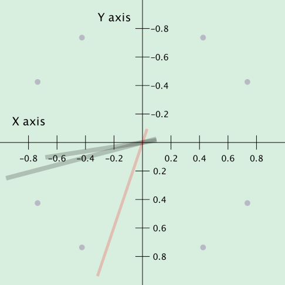

The clock JSON format is minimal. Here is a basic example:
{
"name": "Name of Clock",
"description": "Description of the clock."
"clock_face": [
{
"shape": "circle",
"circle_radius": 1,
"x": 0.0,
"y": 0.0,
"color": "#FFFFFF"}
],
"second_hand": [
{
"shape": "rectangle",
"color": "#FF0000",
"rectangle_fx": -0.01, "rectangle_fy": -0.99,
"rectangle_tx": 0.01, "rectangle_ty": 0.10
}
],
"minute_hand": [
{
"shape": "rectangle",
"rectangle_fx": -0.016, "rectangle_fy": -0.99,
"rectangle_tx": 0.016, "rectangle_ty": 0.10
}
],
"hour_hand": [
{
"shape": "rectangle",
"rectangle_fx": -0.016, "rectangle_fy": -0.69,
"rectangle_tx": 0.016, "rectangle_ty": 0.10
}
]
}
| clock object keys | key description |
|---|---|
| name | Name of the clock. |
| description | Description of the clock. |
| clock_face | List of shapes for the clock face. |
| second_hand | List of shapes for the second hand. It should be oriented towards 12:00 and will be rotated. |
| minute_hand | List of shapes for the minute hand. |
| hour_hand | List of shapes for the hour hand. |

There are 4 shapes that can be used to construct the clocks: “rectangle”, “polygon”, “text”, “circle”, "text_ticks".
| shape object keys | key description | applicable shapes |
|---|---|---|
| shape | String with the following possible string values: "rectangle", "polygon", "text", "circle", "text_ticks". | all |
| x | x position of the shape. | all but polygon |
| y | y position of the shape. | all but polygon |
| color | shape color either format #RRGGBB or #AARRGGBB when alpha channel is desireed. | all |
| ticks | The shape will repeat around the clock the number of ticks (whole number >= 2 and <= 60). | all |
| text | text string to draw. | text |
| text_font | font for text. | text, text_ticks |
| text_size | font size for text. The clock radius is always 1.0. “size”: 0.15 means that at a 200×200 pixel window, the rendered font size will be 15px. Larger window sizes scale the font proportionally. |
text, text_ticks |
| text_styles | font styles for text (separated by commas): "bold" or "italic". | text, text_ticks |
| text_rotation | rotation of the text (number > 0 and < 1.0). 0.25 is 3:00, 0.50 is 6:00, 0.75 is 9:00. | text, text_ticks |
| text_ticks_elements | array of strings to be evenly spaced out around the clock starting in the "noon" position. | text_ticks |
| circle_radius | radius of the circle. | circle |
| rectangle_fx | from x position of the rectangle (number >= -1.0 and <= 1.0). | rectangle |
| rectangle_fy | from y position of the rectangle (number >= -1.0 and <= 1.0). | rectangle |
| rectangle_tx | to x position of the rectangle (number >= -1.0 and <= 1.0). | rectangle |
| rectangle_ty | to y position of the rectangle (number >= -1.0 and <= 1.0). | rectangle |
| polygon_points | list of points. Each point is a JSON object with x and y key-values. | polygon |